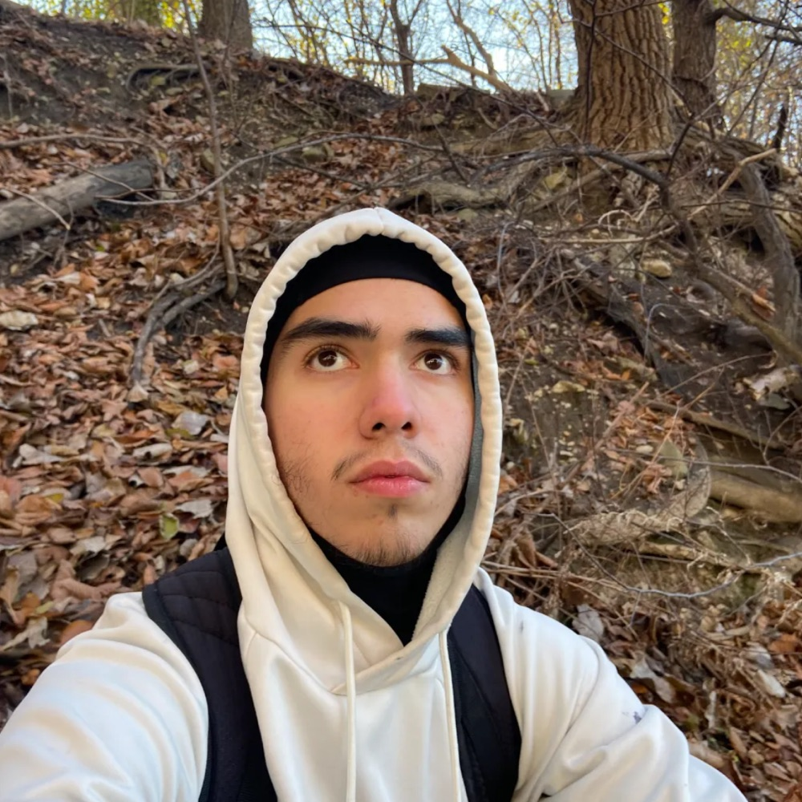

704K+
YouTube views on five long-form vlogs I edited. The top one alone: 368K.
Long-form & short-form editing
01 — Work
YouTube vlogs for a 30K-subscriber travel and dating channel. Story first, pacing that holds, 9–12 minutes that feel short.
Kyrikouts · 30K subscribers on YouTube
Vertical reels for the same creator's Instagram: hooks in the first second, captions that land, cut for retention.
On the side
Something I'm learning alongside the editing: small motion pieces in DaVinci Resolve. I bring it into a video when it helps, like a clean title, a graph or an animated moment, never just for show.
02 — Receipts
704K+
YouTube views on five long-form vlogs I edited. The top one alone: 368K.
580K+
views from my top five reels. The best one alone: 166K.
368K
views on a single 12-minute vlog I cut.
1.8M+
views in total across my long-form and short-form edits.
“I didn't even ask for a testimonial. This is one of my clients.”
03 — Process
You send the raw files and one line on what the video has to do. I come back with the angle before I touch a timeline.
Hook first, then pacing. Dead air goes, tension stays. Built for retention, not just length.
Captions that land, sound, colour and texture, plus simple motion graphics where they help.
Timestamped notes, two rounds of revisions, then the final export in every size you post.

04 — About
I've been editing for three years: YouTube vlogs, live-stream and dating content. I cut long-form and reels for Kyrikouts, a 30K-subscriber travel vlogger, up to five reels a day, with every frame checked before it goes out.
Long-form is where I tell the story: a 10-minute vlog has to earn every minute. Short-form is where I win the first second. On the side I'm learning motion graphics, so I can add a clean title or an animated moment when a video needs one.
My rule is simple: sophisticated, not sparkly. Everything on screen has to earn its place, and has to keep people watching.
05 — FAQ
It depends on length and how much work the footage needs. We agree a fixed price per video before I start, so there are no surprises.